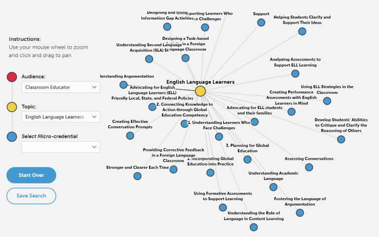

Micro Is Mighty: Can Micro-Credentialing Work for You?
It’s a new year and, yet, given the ongoing challenges of COVID-19, we may feel fatigue and even trepidation about moving forward with our professional development (PD) goals. Instead of committing to a longer term course of study, this might be a great time to investigate shorter, more “bite-sized” PD, known as micro-credentialing.
“Bite sized pieces of Strategy (cc @amelia_torode @adliterate)” by smithery.com is licensed under CC BY-NC-ND 2.0
What Is a Micro-Credential?
Micro-credentialing was popular before COVID-19 because of its flexible, online approach, which made professional learning more accessible, affordable, and individualized for working educators. Some of us who are familiar with the term may immediately think of electronic badging—but micro-credentialing is much more than earning digital badges (although those can look really fun!). Willis (2021) defines micro-credentialing as a
competency-based approach to professional learning. Through this approach, teachers are recognized for their growth and mastery of a specific, stated goal. The goal is narrow in focus (e.g., using primary sources in the elementary classroom) and measured by the evidence submitted to the certified reviewer…Opportunities are on demand, providing teachers with the flexibility to choose their own topic of interest, progress at their own pace, and determine when and where they wish to learn. Many micro-credentials are now available from a variety of providers.
Essentially, micro-credentials can be completed in less time than a graduate degree and are generally focused on the skills gained rather than seat-time. In a report titled “Seven Lessons Learned from Implementing Micro-Credentials,” the author emphasizes that micro-credentials are truly self-paced and job-embedded, and due to their short length are intense and key professional learning opportunities.
The developers of MOOCs such as edX, Coursera, Udacity and FutureLearn foresaw the need to recognize completion of their courses, and MOOCs are one of the biggest providers of micro-credentials. A comprehensive listing of MOOC-based micro-credentials is maintained by Class Central.
Micro-Credentials for English Language Educators
Educators can now find many providers who offer micro-credentials, and through these micro-credentials they can develop expertise in educational technology, universal design for learning, and other important and trending areas. For those focused on deepening their practice working with English language learners, the following two providers are a great place to start your micro-credentialing journey.
Digital Promise
As reviewed in an earlier TESOL Blog post, Digital Promise is a database which hosts a huge variety of free micro-credential courses, curated from a large array of providers; essentially, it is a portal site for 450 discrete micro-credentials. Choose an issuing organization or theme (called a “stack”), or search for a topic. The format, length, and assessment cost vary based on the organization and the micro-credential sought. According to Marcotte,
This database aims to provide a variety of competency- and research-based PD opportunities to help educators develop their skills. This database shares opportunities from its own offerings and from various universities and organizations (e.g., PBS, the Center for Collaborative Education, National Geographic Society, and various school districts and universities), which makes it easy for educators to find the PD they are looking for.
The micro-credential courses they share are reviewed for quality and research-backing, and they are linked directly from the Digital Promise platform’s explorer platform. The concept they base their platform on is called “stacking”—adding credential to credential in a linked series to arrive at a new level of mastery in a particular area of education. Their explorer tool can also be filtered as a web of interconnected nodes, revealing many options based on the user’s role and topic of interest, as seen below.

Digital Promise. (n.d.). Micro-credential explorer [Screenshot]. https://digitalpromise.org/initiative/educator-micro-credentials/micro-credential-explorer/?a=Audience&b=Classroom%20Educator&c=English%20Language%20Learners
Center for Learning in Practice
The Center for Learning in Practice at Childhood Education International offers facilitated courses, live webinars, communities of practice as well as self-paced, modular learning leading to micro-credentialing in the important area of working with refugee students. Facilitated courses are about US$150, while many self-paced courses are free. For instance, educators can sign up anytime for “Teaching Refugees: Building Knowledge” or “Supporting Refugee Students with Limited/Interrupted Formal Education”, which consist of six short modules for no charge, and these prepare educators to earn micro-credentials focused on core teacher competencies in refugee education.
A Few Other Options
TESOL International Association
Similar to micro-credentialing, TESOL is now offering shorter and more focused training and badging through its Modular Education (ME) initiative. Here, educators can follow a thematic strand, such as “High-Leverage Teaching Practices,” within which topic areas like designing lesson objectives are differentiated by teaching context: K–12, higher education, or adult education. Currently, there is introductory pricing: TESOL members, US$59/module; nonmembers, US$79/module. As modules are completed, educators may earn digital badges that can accumulate toward a completed series badge in that topic area.
National Education Association
For those U.S. educators who belong to the National Education Association, there are dozens of free micro-credential courses, and a stack of eight 15-hour courses focused exclusively on English language learners.
Bridge
There are also commercial micro-credential courses offered by for-profit companies, such as Bridge, which provides content for free, with the option to pay about US$30 for certificates of completion and badges. Bridge’s modules are narrowly targeted to address particular areas, from using podcasts to teach English learners to teaching very young learners online. Once these courses are completed, they can be added to your résumé, and digital badges can be included on your LinkedIn and social media profiles.
Micro-Credential Trends Around the World
In Canada, eCampusOntario developed a framework for micro-credentials, which is being used to shape policies in the region as to how to offer high-quality micro-credentials that are industry recognized and potentially added to university transcripts. In Europe, the EU Commission proposed this draft definition of a micro-credential in order to better understand and regulate their use.
A study by Northeastern University found that 64% of companies viewed micro-credentials as demonstrating a commitment to lifelong learning, and 55% saw micro-credentials gradually diminishing the emphasis on degree-based hiring. Micro-credentials are increasingly seen as key to the future of work and learning in an evermore “gig” economy, and they can be seen as providing greater equity and access to the workforce.
In the comments, share any experiences you have had with micro-credentialing!

About the author
Laura Baecher
Dr. Laura Baecher is professor of TESOL at Hunter College, City University of New York. Her research interests and publications relate to teacher education, including educational technology in teacher learning, observation and coaching for English language teaching, and professional development in TESOL. Her recent books are Using Video to Support Teacher Reflection and Development in ELT and Reflecting on Problems of Practice in TESOL. She has served as chair of TESOL International Association’s Teacher Education Interest Section, an English language specialist for the U.S. Department of State, and president of the New York State TESOL affiliate.